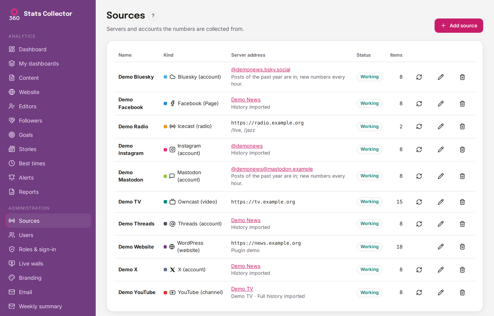

Setting up sources: overview¶
A source is one website, social media account or streaming server that Stats Collector collects numbers from. Every source is added under Administration → Sources → Add source. This page tells you, per platform, where you have to go, what you need before you start, and which values end up in which field of Stats Collector. Each platform has its own page with the full step-by-step guide.

Before you start¶
Check these once, before you connect anything:
- Stats Collector has its public
https://address. Facebook, Instagram, Threads, YouTube and X send you back to Stats Collector after you sign in. They only accept anhttps://address that is reachable from the internet. Set it up first: see Reverse proxy and HTTPS. The address inSC_PUBLIC_URL(in/etc/stats-collector/config.env) must be exactly the address people type in their browser. - You are an administrator in Stats Collector. Only administrators see Administration → Sources.
- You have the right account on the platform. You need to be admin of the Facebook Page, manager or owner of the YouTube channel, owner of the X account, and so on. A colleague's personal account is not enough when they are not a manager of the page or channel.
- Use an organisation account for developer apps where you can (for example a shared mailbox for Google Cloud and the Meta app), so the apps do not disappear when someone leaves.
Which platform, where to go¶
| Source | Where you go | What you need | Costs | Review by the platform | Time to set up |
|---|---|---|---|---|---|
| WordPress | Your own WordPress admin (Plugins → Add New Plugin → Upload Plugin) | Administrator in WordPress | Free | No | 10 minutes per site |
| YouTube | console.cloud.google.com | Google account that manages the channel | Free | Only to stop the 7-day re-connect (optional) | 30 minutes |
| developers.facebook.com/apps and business.facebook.com | Admin of the Page, verified Business portfolio | Free | Yes, advanced access (days to weeks); works for app roles right away | 1 hour + review | |
| Same Meta app as Facebook | Instagram professional account linked to the Page | Free | Same review as Facebook | 15 minutes after Facebook | |
| Threads | Same Meta app, use case Access the Threads API | The Threads account (tester invite) | Free | Yes, advanced access; works for testers right away | 30 minutes |
| X | console.x.com | Owner of the X account, payment card | Pay per post read (~$30/month) | No | 30 minutes |
| Bluesky | Nowhere: only the handle | The handle | Free | No | 2 minutes |
| Mastodon | Nowhere, or Preferences → Development on your Mastodon server | The account; sometimes an access token | Free | No | 2–5 minutes |
| Icecast | Your Icecast server or hosting provider | Server address; admin user and password for extra numbers | Free | No | 5 minutes |
| Owncast | Your Owncast admin (https://<owncast>/admin) |
Server address; admin password (optional) | Free | No | 5 minutes |
Sign-in with Microsoft 365 is not a source but is set up the same way; see Microsoft 365.
What goes in which field¶
| Source | Fields in Stats Collector | Where you find the value |
|---|---|---|
| WordPress | Name, website address | You choose; the address of the site |
| → you get plugin address, site key, secret | Paste these in WordPress under Settings → Stats Collector | |
| YouTube | Client ID, Client secret | Google Cloud → APIs & Services → Credentials → your OAuth client |
| Facebook / Instagram | App ID, App secret, Configuration ID (optional) | Meta app → App settings → Basic; configuration under Facebook Login for Business → Configurations |
| Threads | Threads App ID, Threads App secret | Meta app → Use cases → Access the Threads API → Customize → Settings (not the Facebook App ID) |
| X | OAuth 2.0 Client ID, OAuth 2.0 Client Secret, monthly budget, read every … hours, price per post | X console → your app → Keys and tokens → OAuth 2.0 Client ID and Client Secret |
| Bluesky | Bluesky handle | The profile on bsky.app, e.g. @ournews.bsky.social |
| Mastodon | Mastodon account, Access token (optional) | The profile, e.g. @ournews@mastodon.social; token from Preferences → Development |
| Icecast | Server address, mount points, admin user, admin password | icecast.xml (<authentication>), or ask your hosting provider |
| Owncast | Server address, admin password | Owncast admin → Configuration → Server setup → Admin password |
Redirect addresses¶
For the platforms where you sign in (Google, Meta, Threads, X), the platform must know where to send you back. Stats Collector shows this redirect address in the source form, with a copy button. Copy it from there; they always look like this:
| Platform | Redirect address | Where you paste it |
|---|---|---|
| YouTube | https://<stats address>/api/connectors/youtube/callback |
Google Cloud → OAuth client → Authorised redirect URIs |
| Facebook / Instagram | https://<stats address>/api/connectors/meta/callback |
Meta app → Facebook Login for Business → Settings → Valid OAuth Redirect URIs |
| Threads | https://<stats address>/api/connectors/threads/callback |
Meta app → Access the Threads API → Settings → Redirect callback URLs |
| X | https://<stats address>/api/connectors/x/callback |
X console → app → User authentication settings → Callback URI / Redirect URL |
The address must match exactly: https, the same host name, no trailing slash. If you later change the address of Stats Collector, update it on every platform.
The general flow¶
Every source follows the same steps:
- Prepare the platform (developer app, permissions, plugin): see the platform page.
- Administration → Sources → Add source, choose the kind, give it a clear name (it is shown on the dashboard and live wall, for example Facebook IJmond360 or Radio live).
- Fill in the values from the table above and click Save.
- For sign-in platforms click Connect with … and sign in on the platform's own page. Allow every permission it asks for.
- Use Test connection where it is offered. The Status column then shows Working, or the reason it fails.
- History is imported in the background; the dashboard fills within minutes (YouTube: hours for an old channel).
You can add as many sources of one kind as you like: one per Page, account, site or stream. A Meta, Google or X app can be reused for several sources: fill in the same ID and secret.
Secrets and safety¶
- App secrets, client secrets, passwords and tokens are stored encrypted and are never shown again. To change one, type a new value; leave the field empty to keep the current one.
- Stats Collector only asks for read permissions. It never posts, comments or changes anything on a platform.
- When someone who connected a source leaves the organisation, connect the source again with another administrator before their account is removed; otherwise collection stops with Access … has ended.
Coming later: LinkedIn and TikTok¶
These are not available yet, because both platforms first review the app, which takes weeks. You can already start:
- LinkedIn: on linkedin.com/developers/apps create an app linked to the organisation's LinkedIn Page (a Page admin must verify it), then under Products request Community Management API. LinkedIn asks for a short screen recording and company details.
- TikTok: on developers.tiktok.com create an app, add the Login Kit and Display API products with the scopes
user.info.basic,user.info.statsandvideo.list, and submit it for review.
Keep the IDs and secrets; you will need them when these sources arrive.
Something goes wrong?¶
Each platform page ends with a table of messages and what to do. The most common causes:
| Symptom | Cause |
|---|---|
| The platform says the redirect URI is not allowed | The redirect address on the platform is not exactly the one Stats Collector shows. |
| Access … has ended | The person who connected changed their password, lost their role, or the token expired. Click Connect with … again. |
| It works for you but stops after a while | The app is still in development or testing mode. Finish the platform's review (Meta, Threads) or publish the app (Google). |
| No numbers from WordPress | WordPress cron does not run; see WordPress. |
See also Troubleshooting.